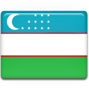

O'zbekcha-Turkcha va Turkcha-O'zbekcha Lug'at


Versiya 1.2
Versiya 1.2
Sözlük ilova-dasturi O'zbek va Turk tilini o'rganuvchilar uchun mo'ljallangan. So'zlar bazasi Berdak Yusufning "Turkcha-O'zbekcha va O'zbekcha-Turkcha Lug'at(1993)" kitobidan olingan bo'lib, 6 mingdan ortiq turkcha va 9 mingdan ortiq o'zbekcha so'zlardan iborat. Shuningdek, qo'shimcha sifatida dasturga so'zlashuvda ko'p ishlatiladigan iboralar va so'zlar ham kiritilgan.
Agar ilova sizga yordami tegayotgan bo'lsa, bundan bag'oyat hursandmiz.
Sarvar Nishonboyev sarvar.nishonboyev@gmail.com